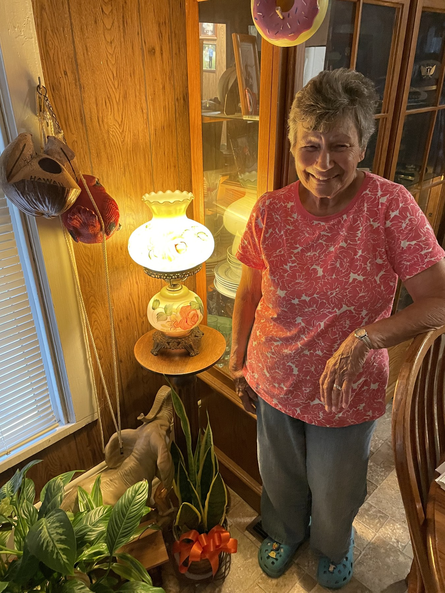
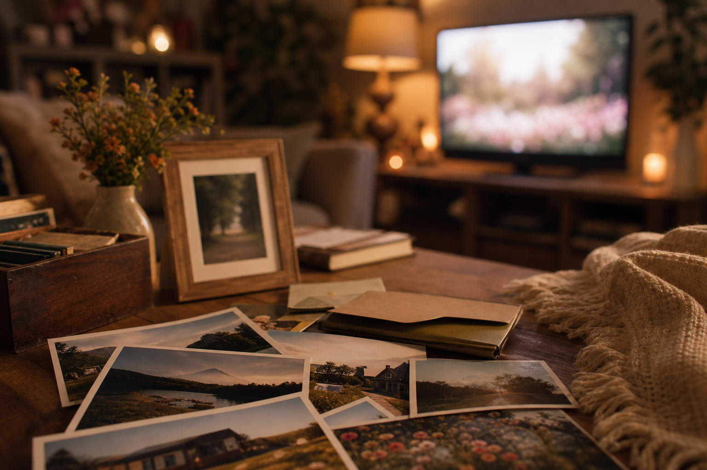

A little everyday life
The kids, the pets, dinner together, a project, a visit. The little things are worth sharing.

McCormick Family Pictures
The everyday moments. The old favorites. The people she loves. Send a photo, and it can become part of the family slideshow on Grandma's TV.
Attach your photos and choose Actual Size or Original Quality when asked.

Open your email app, attach a few pictures, and send them to the address above.
Your photos are added to the family rotation. You'll get an email reply when they arrive.
Family moments appear on Grandma's TV throughout the day, with nothing she needs to do.
What should I send?
A quick snapshot is perfect. It's about helping Grandma feel close to the people and places she loves.
The kids, the pets, dinner together, a project, a visit. The little things are worth sharing.
Old family photos, holidays, reunions, and favorite trips. Scanned prints are welcome, too.
Send the original photo when possible. Choose Actual Size or Original Quality so it looks its best on her TV.
Keep it family-friendly. Only send photos you're comfortable having displayed in Grandma's room.

The story behind McPics
McCormick Family Pictures was created with love for Grandma.
Grandma has always been such an important part of my life, and this project was built from a place of love and gratitude. The idea is simple: to give family an easy way to share everyday moments, old memories, and familiar faces with her.
Photos sent here can show up right on her TV, bringing a little more connection, comfort, and joy into her room throughout the day.
It is a small project, but it means a lot — a way to share with Grandma the people, memories, and everyday moments that make our family special.
A little better, little by little
The small improvements that keep the photos coming and the slideshow running smoothly.
We added a schedule so the display can rest during quiet hours and come back for the slideshow when it is time.
A few improvements to how the slideshow picks and shows your photos:
We cleaned up a couple of counting issues behind the scenes:
We've made emailing photos to the family slideshow friendlier and smarter:
We've been busy making the family photo slideshow even nicer to watch. Here's what's new:
We made McPics easier to support from the desktop:
We made photo importing more reliable:
We added the Family Update experience:
We made McPics easier to manage:
McPics got its foundation: